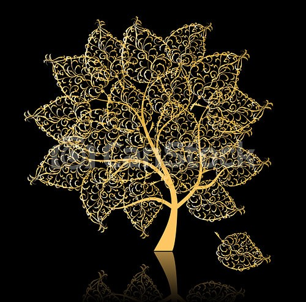

SAKURA
SAKURA
ABOUT US
Restaurante SAKURA abrió sus puertas en el año 2012, cuando varios amigos/as decidieron unir sus ganas de transformar la comida en platos que provocasen sensaciones y crearon un pequeño hogar culinario japonés en el centro de Madrid, contando con los mejores profesionales y maestros como YAKI NARISAWA y NIKO NAKAYAMA.
Nuestros platos están elaborados con los mejores ingredientes y una producción minimalista, que a su vez cuida la estética y la sensación continua de creatividad.
Las instalaciones de SAKURA están diseñadas por el experto en Feng Shui Nikita Yako, creando un ambiente agradable para que la comida y la decoración te transporten al centro de Japón.

SAKURA RESTAURANTE
En un ambiente único, relajante y abiertos a los sentidos, se encuentra el Restaurante SAKURA, donde disfrutar de la gastronomía nipone de la mejor calidad será una experiencia garantizada.
Todo en SAKURA fluye y se fusiona para ofrecer una experiencia única al consumidor, un viaje a través de los sentidos. La propuesta gastronómica, su cuidada decoración y la experiencia audiovisual que se ofrece, evocan a los cuatro elementos: tierra, fuego, aire y agua
Te recomendamos la elección del menú abierto para así disfrutar de la propuesta omakase, donde el chef sirve al comensal entre 15 a 20 platos. El producto de temporada, la técnica y el menú basado en las formas, de colores, las maneras de trabajar los alimentos y por supuesto, el sabor, logran una experiencia única.